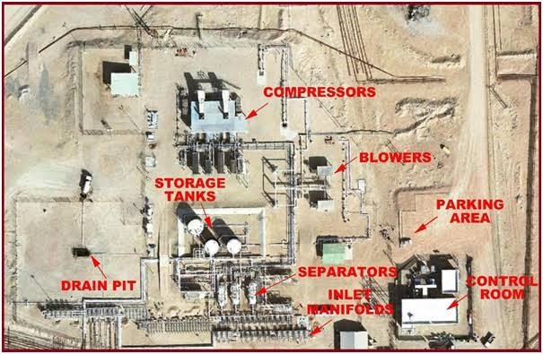
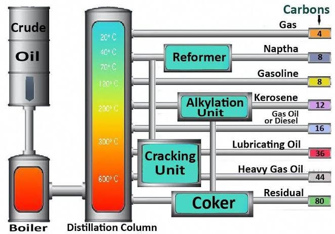

RESEARCH WORKS
IMPROVING NIGERIA'S OIL REFINING CAPACITY THROUGH DESIGN AND CONSTRUCTION OF EFFECTIVE AND SUSTAINABLE REFINERIES
Umar Muhammad Kamel
umarmohdkamel@gmail.com
Abstract
The purpose of writing this paper is to proof the negative consequences of petroleum products importation on Nigeria’s economy and to sensitize stakeholders in the petroleum industry on the need to build more refineries and the professionals involved in the design and construction of such critical infrastructure. Nigeria spent billions of dollars in importation of petroleum refined products. It spent about $53.53bn in 2015, $46.55bn in 2016, $49.51bn in 2017, $52.23bn in 2018 and $58.75bn in 2019. Nigeria consumes more than 17 billion liters of PMS annually and the largest share is imported. This is because the country’s refineries are not working due to maintenance issue and pipeline vandalism. Importation of refined petroleum products creates dilemma for the government; when the oil price falls in the international markets, the government run short of money and must import the product especially PMS which is the major commodity used for transportation and when the price goes higher, the bill for subsidy become huge. It is unsustainable for the government to continue with this unnecessary spending and hence its intention to deregulate the sector. However deregulation without improving refining capacity will create more problems, especially between the government and the labour unions because it would cause more hardship and suffering for Nigerians. The only solution remain is ramping domestic refining capacity. The paper therefore highlights; the importance of oil and gas sector, the forecast and demand of oil and gas, the petroleum products Nigeria imports, as well as the consideration and materials used in construction of petroleum refinery.
KEYWORDS: Hydrocarbons, Refinery, Forecast, Deregulation, Downstream.
Introduction
According to ARCON (Architects Registration Council of Nigeria) Act: "Architecture means the art and science in theory and practice of design, erection, commissioning, maintenance and management and coordination of allied professional inputs thereto of buildings, or part thereof and layout of master plan of such buildings, or groups of buildings forming a comprehensive institution, establishment or neighborhood as well as any other organized space, enclosed or opened, required for human and other activities". By this definition, the act gives architects an overwhelming power in the building and construction industry. Not only buildings but also organized spaces are included.
Also according to Nigeria Oil and Gas Industry Content Development Act (2010 Act No. 2) section 3(2) read in part: “There shall be exclusive consideration to Nigerian indigenous service companies which demonstrate ownership of equipment, Nigerian personnel and capacity to execute such work to bid on land and swamp operating areas of the Nigerian oil and gas industry for contracts and services contained in the schedule to this Act.”
Nigeria is spending billions of dollars in importation of petroleum refined products. It spent about $53.53bn in 2015, $46.55bn in 2016, $49.51bn in 2017, $52.23bn in 2018 and $58.75bn in 2019. Nigeria consumes more than 18 billion liters of PMS annually and the largest share is imported. This is because the country’s refineries are not working due to maintenance issue and pipeline vandalism. Importation of refined petroleum products creates dilemma for the government; when the oil price falls in the international markets, the government run short of money and must import the product especially PMS which is the major commodity used for transportation and when the price goes higher, the bill for subsidy become huge. It is unsustainable for the government to continue with this unnecessary spending and hence its intention to deregulate the sector. However deregulation without improving refining capacity will create more problems, especially between the government and the labour unions because it would cause more hardship and suffering for Nigerians. The only solution remain is ramping domestic refining capacity.
As department of Architectural Technology at an institution with the mandate to train mid-level manpower in oil and gas sector in Nigeria and west Africa sub-region; in line with industry needs, community aspirations, then our curriculum is expected to be geared towards achievement of the mission and vision of the institution, hence the need to give students insights on project choices in the field of oil and gas. These projects may range from the design of refineries (oil or gas) to the design of filling stations and LNG outlets.
Nigeria has four state owned refineries located in Port Harcourt, Warri and Kaduna. The first oil refinery was built in Port Harcourt and began operations in 1965 with capacity to process 38,000 barrels per day. The refinery was expanded in 1970 to produce 60,000 barrels per day. In 1978 another refinery was constructed in Warri with capacity to produce 100,000 barrels per day. In 1980 another third refinery was constructed in Kaduna. The second Port Harcourt refinery was completed in 1989.
The Nigeria’s first private oil refinery located in Lagos (Dangote refinery) is expected to start production in 2022 and recently NNPC acquires 20% stake in the refinery. The refinery has the capacity to produce 650,000 bpd.
To make sure domestic consumption supply and export of surplus is sustained, there is need to build more refineries, because it has been predicted that there will be a demand increase in petroleum products in sub-Saharan Africa and India as a result of ten-fold growth in transport and power generation.
REFINERY
According to Wayne, (2012) An oil refinery is an industrial process plant where crude oil is processed and refined into more useful petroleum products, such as gasoline, diesel fuel, and asphalt base, heating oil, kerosene, and liquefied petroleum gas. It is also considered as an essential part of the downstream sector of the petroleum industry. Sharma, (2014) Sees Oil refineries as typically large sprawling and systematized industrial complexes and most importantly extensive piping successively transporting streams of fluids among huge chemical processing units of crude oil. Rangwala, (2013) describe oil refinery as a weighty manufacturing industrial complex which cover a massive area and the project is very enormous in all ramifications. Denehy (2011), feels that a refinery is an organized and coordinated arrangement of equipment with miles of pipes which separates the components in crude oil and produce physical and chemical changes in them to create salable products of quality and quantity consumers demand.
From the foregoing meanings, the scholars have define refinery with some common meanings like a large sprawling coordinated crude oil chemical industrial processing plant with common units and supporting facilities. We add the supporting facilities in order to justify our work.
Refinery layout
Figure 1. Source: www.google.com
- i. Common Units of Refinery
- ii. Major Products of Refineries Products 
- iii. Petrochemicals
Desalted unit for removing salt from crude oil, Atmospheric distillation unit which distills crude oil into fractions, Vacuum distillation, Naphtha hydro-treater, Catalytic reformer converting naphtha boiling into octane, Distillate hydro treater for desulfurization of distillates (e.g. diesel), Fluid catalytic cracker converting heavier fractions into higher and more valuable products, Vis breaking, Metrox for treatment of LPG, kerosene, jet fuel by oxidation, Coking unit, Alkaline Unit, Dimerization unit, Isomerization unit, Steam reforming unit, LPG storage, Storage tanks, Slug catcher, Amine gas treat, Utility unit or cooling towers, Waste water collection and treatment systems, Solvent refining unit, Solvent dewaxing unit. All these unit require design considerations.
Figure 2. Source: www.google.com
LPG, naphtha, gasoline, kerosene and aviation fuels, diesel fuel, fuel oils, lubricating oils, paraffin wax, asphalt and tar, petroleum coke (Wayne, 2012.)
Denehy, (2011.) Classify Petroleum components as either aliphatic, aromatic or inorganic provide raw materials for manufacture of petrochemicals. These i.e. petrochemicals are chemical substances produced commercially from feed stocks derived from crude oil or natural gas. Therefore, a petrochemical plant is an important integral part of large refining complexes which should be considered during design and planning of petroleum refinery. Products such as: adhesives, carpets, cosmetics, fertilizers, paints, rubber, fabrics and plastics which satisfy the fundamental needs of modern life comes from petrochemicals. Polyethylene and polypropylene alone are used to manufacture thousands of products such as: appliances and automobile parts, moldings, battery cases, luggage, bottles, plastic toys, transparent food wrappers, plastic containers, construction materials and the list goes on and on. Nigeria has to spend billions of its foreign earning to import all these without refineries.
IMPORTANCE OF OIL AND GAS SECTOR TO NIGERIA
Nigeria has almost 40 billion barrels of crude oil reserve according to OPEC (EITI, 2021.). Nigeria is ranked as 10th proven oil reserves in the world (PTDF, 2010.). Oil and Gas sector contributes 65 percent of total government revenue (EITI, 2021.). The 90 percent of Nigeria's foreign exchange earnings come from oil. The sector also contributes about 9 percent of the country's GDP (Varella, 2020.). Nigeria has the capacity to produce 2.5 million barrels of oil per day. It is the largest African producer of oil and 13th largest producing country in the world (EITI, 2021.).
i. Nigeria's Refined Products Imports
Transportation and power sectors are the major teamsters of demand for PMS in the country. Imports presently account for over 90% of PMS supplied in the country and this is likely to endure in the near future (Adeosun, Olucleye 2015.). According to Petroleum Products Pricing Regulation Agency (PPPRA) 2019 report, Nigeria import more than 18 billion liters of Petroleum Motor Spirit (PMS) annually. Other refined petroleum products imported for the same year are: AGO (diesel) 4,586,579,439 liters, ATK (aviation fuel) 951,769,089 liters, HHK (kerosene) 128,110,313 liters. Local production of Petroleum Motor Spirit (PMS) was only 166,332,185 liters. National Bureau of Statistics Q3 2020 foreign trade in goods statistics report shows that import grew by 216.28% compared to Q3 2019. The total trade was N8.37 trillion; import N5.38, export N2.99 trillion and balance of trade of -N2.39 trillion. Motor Spirit Ordinary alone account for 9.90% of the import. Recently, NNPC released its April 2021 report. According to the report, foreign refineries processed Nigeria’s crude oil of about 145,856 million barrels valued at N2.39 trillion between March 2020 and March 2021. This translate to 7,553,150 barrels monthly and 243, 650 barrels per day.
ii. Increase in Oil and Gas Demand Forecast in the Developing World
Based on predictions by DVN Oil and Gas Executive summary (2017) there is going to be refinery demand growth in India and sub-Saharan Africa. They describe it as a three-fold increase in refinery demand by 2040 and will largely be driven by an intensifying regional transport and ten-fold growth in oil consumption for power generation. However the forecast shows that oil and gas will account for a larger portion of 44% of the world's primary energy supply in 2050, down from 53% in 2017 which indicates a decrease of only 9% in the coming three decades of forecast. Therefore, investment will be needed to add new oil and gas production and refining capacity to control predominant capitals carefully and sustainably in order to deliver production levels that can meet the projected demand of the product. Sankar (2008) also opined that energy demand will continue to burgeon in electricity, transportation and petrochemical sectors which implies that demand of fossil fuels will substantially increase. He noted that fossil fuels fired power stations account for two thirds of the world’s electric power generation capacity. He concludes that transportation fuels alone account for more than 55% of total consumption which is five times higher than that of the advanced countries. According to Adeosun and Oluleye (2015), Even though prices of oil are projected to keep on low in the medium to long term, attention on ramping up domestic refining capacity should be seriously taken into consideration. Shifting from crude production to crude value awareness will change Nigeria to become a major exporter of petroleum refined products in the next decade.
PETROLEUM INDUSTRY
The Petroleum industry is usually divided into three major categories: upstream, midstream and downstream. The upstream refer to searching for and the recovery and production of crude oil and natural gas. The midstream processes, stores, markets and transport oil and gas commodities. The downstream industry is concerned with refining of crude oil, and the selling and distribution of its products (Wayne, 2012.).
i. Petroleum Industry Life Cycle
PTDF (2010) illustrates 14 revolving life cycle of petroleum industry:
- Reservoir management
- Abandonment
- Basin analysis
- Prospect generation
- Economic analysis
- Wildcat drilling
- Appraisal drilling
- Field development plan
- Field development
- Facilities design
- Facilities construction
- Facilities installation
- Operations
PTDF concluded that each stage require technological input.
ii.Planning
Planning is an act of making choices among the options that seem exposed for the future together with obtaining their implementation, which depends on the allocation of the necessary resources. We cannot predict the future with certainty. But by paying more attention to short-term, emphasizing on flexibility with contingency planning, we can have some insights about the possible future. Planning is also the complementary process of identifying and choosing among various possible uses of productive resources, and ensuring that the preferred uses are achieved (Robert, 1974.).
iii. Siting an Oil Refinery
Rangwala, (2013), An Oil refinery is a weighty manufacturing industrial complex which cover a massive area and the project is very enormous in all ramifications. They concluded that the effectiveness of this type of industry depends on proximity to raw materials and transportation facilities should be available. Before siting an oil refinery, there are numerous requirements that should be considered. Siting of this type of industries in residential areas is not desirable because it create noises, odors and blow smokes. It should be located away or on that side of residential areas where prevailing winds will blow away from it. There should be an access road, railway to the worker's residence. Other considerations are; availability of cheap land, electricity, sewage and water supply, topographical conditions, amenities in form of landscape features, facilities for industrial waste disposal.
iv.Master planning
- Administrative Block
- Residential area (R.A)
- Clinic
- Jetty
- Air Strip
- Railway Terminal
- Fire Station
- Security
- Power Generation Plant
- Accessibility Roads
- Nature Park
An administrative block is an essential part of refinery which should be carefully designed to convenience of the administrative staff. It should include reception area, offices, conference rooms, cafeteria and toilets. It should have main entrance and an escape door. It should be well ventilated and lighted. There should be an enough parking space with special parking lots for the senior management staff.
There should a space within the complex for staff residential area. This should also have a shopping area with other amenities and facilities; sports area with; golf course, football field, tennis court, indoor sport hall.
There should be a hospital for treatment of minor injuries and other ailments. The number of bed spaces should depend on the size of the project and the number of staff that are expected to work in the complex and their families.
If the complex is proposed around the coast or navigable river, provision should be made for construction of both passenger and vessel jetties. The passenger’s jetty would be used for transportation of staff while the vessel jetty would be used for transportation of refined products and other petrochemicals to the market.
A special undulating terrain should be demarcated for construction of an air strip. This would enable staff to embark on air trips both official and unofficial when the need arises.
A railway terminal can serve means of transportation of petroleum products to the market.
Because refineries are dealing with inflammable substance, a fire station is an important part of the complex. There should be modern firefighting equipment and well trained firefighting corps. If possible there should also be a helipad for firefighting helicopter. Additionally, fire hydrants should be located after each 100 meters with stable water supply.
A major security building should be proposed for coordination of security activities within the vicinity of the complex. All main entrances should have security check points.
The amount energy required for burning the crude oil is huge. Therefore it is very important that the refinery has an independent power generation plant that would provide the required energy needs within the various units of the complex.
All the various units of the complex should be accessible through provision of access roads.
Establishment of Nature Park near the refinery for close monitoring of both wild animal and plant species. This would enable authorities to monitor environmental safety in relation to the operations of the refinery.
v.Building Materials
Low Carbon Steel: Mild steel is the most commonly used building material in refinery construction. This material is cheap and available in wide range of standards forms and sizes. The material can easily be cut and assembled. It also has good tensile strength and ductility.
ENVIRONMENTAL CONCERNS
One undisputable fact remains; whether Nigeria refines petroleum or not, it must consume the products and this translate to importing it from somewhere. According to the latest NNPC (2021) report, foreign refineries processed Nigerian Crude Oil of about 145.86 million barrels valued at N2.39 tn between march 2020 to march 2021. Whether the pollution happens in Nigeria or outside is almost the same, because pollution in one part of the world would affect another part no matter how far their distance may be apart. This is why we suggest establishment of nature around the complex for monitoring health of plant and animal species to minimize the negative consequences when any defect is detected.
SUMMARY AND CONCLUSION
From the foregoing, we have been able to establish the fact that Nigeria needs to ramp up its domestic petroleum refining capacity to meet the country’s demand of the products. We have also proof the negative consequences of importation of the products on the economy. On the other hand we also have proven that demand of petroleum products will increase in the developing world as a result increase in power consumption and transportation. Design consideration for refinery complex is also discussed by highlighting the major activity areas within the complex as well as environmental concern with regards to pollution.
REFERENCES
1. Adeosun O. and Oluleye A. (2015): The Bottom-up Refining Revolution https://www.pwc.com accessed 22nd February, 2021.
2. Architects (Registration, Etc,) Act. https:// arconigeria.org.ng
3. Bhaskararao B. K. (2010) Petro Chemicals. Khanna Publishers, Delhi, India.
4. Denehy D. (2011): Fundamental of Petroleum. The University of Texas, Austin-PETEX.
5. DPR (2020): National Fuel Situation Status Report. https://www.dpr.gov.ng/national-fuel-situation-status-report. Accessed 1st April, 2021.
6. DNV-GL (2017): Oil and Gas Forecast to 2050, Energy Transition Outlook.
7. National Bureau of Statistics: Foreign Trade in Goods Statistics Q3 (2020) Report. https://www.statistics.ng.gov. Accessed 23rd February, 2021.
8. Nigeria Oil and Gas Industry Content Development Act 2010.
9. Prasad R. (2013) Petroleum Refining Technology. Khanna Publishers, Delhi, India.
10. Rangwala S. C. etal (2013) Town Planning. Charotar Publishing House PVT. LTD. Gujurat, India.
11. Roberts M. (1974): An introduction to Town Planning Techniques. UCL Press Limited, London UK.
12. Sankar G. N. (2008) Advanced Petroleum Refining. Khanna Publishers, Delhi, India.
13. Sharma D. (2014) Petroleum Science and Engineering, Random Publications, New Delhi, India.
14. The Punch (2021): “Foreign Refineries Process 2.39 tn Oil for Nigeria in 13 Months. https://www.punch.com. 15/08/2021.
15. The Vanguard (2020): “The Vanguard Newspaper online (www.vanguardngr.com). Ref: (www.vanguardngr.com/2020/05/nigeria-imports-20-89bn-litres-in-2019/accessed 2021)”.
16. Varella S. (2020): Contribution of Oil and Gas Sector in Nigeria 2018-2020. 5. https://www.statista.com 16/02/2021.
17. Wayne J. (2012): Oil and Gas Production. Auris Reference Ltd, UK.
18. Willet R. E. editor (2000): Natural Gas Industry Analysis. Financial Communications Company, Houston US.